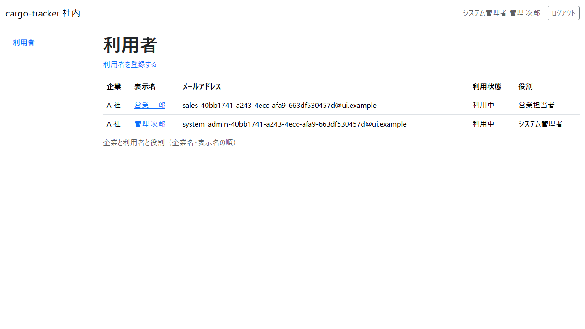
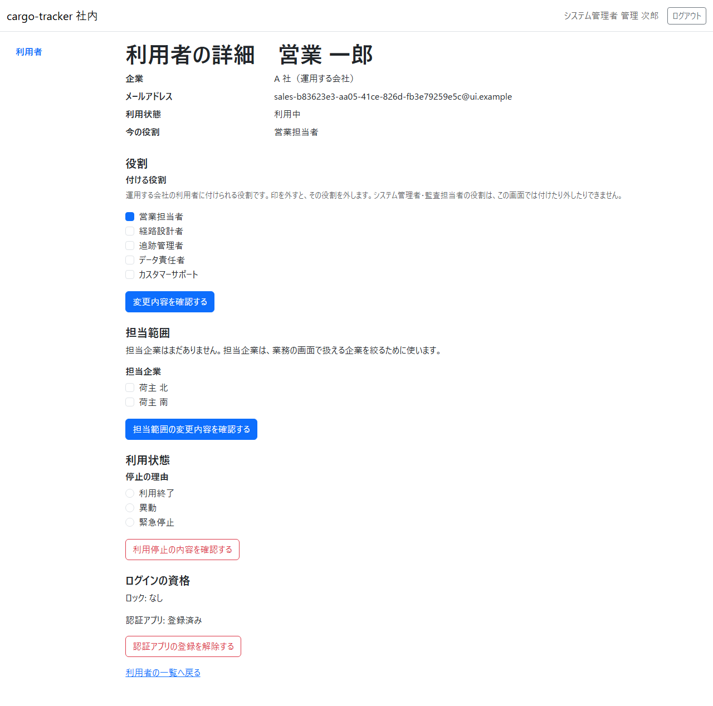
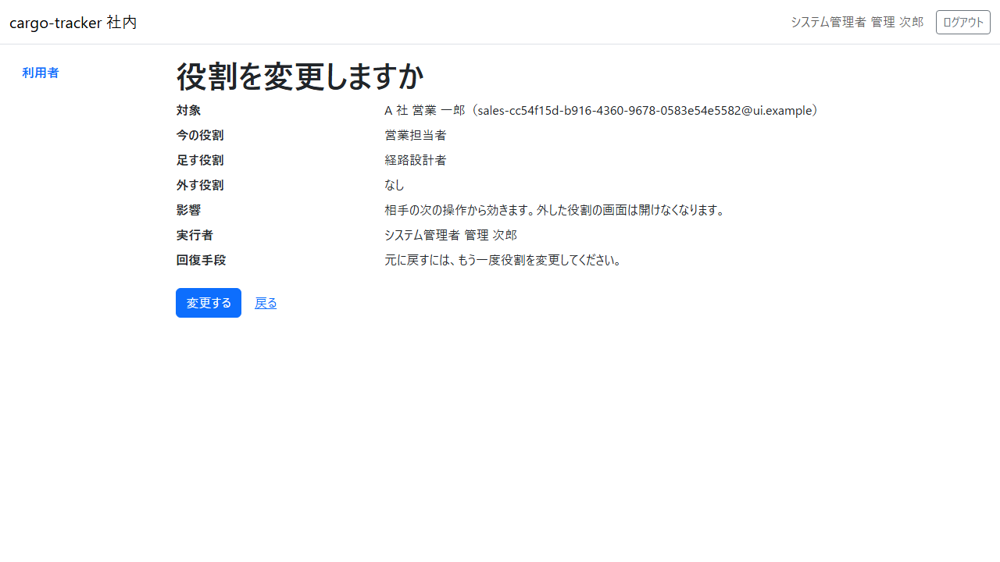

11 章 利用者の管理¶
システム管理者が、利用者の一覧と詳細を確かめ、利用者の業務の役割を確認の画面を経て付けたり外したりし、利用者の利用を停止し再開する手順です。役割は、荷主担当者・営業担当者・経路設計者・追跡管理者・データ責任者・カスタマーサポート・システム管理者・監査担当者の 8 つに決まっています。この画面で付け外しできるのは、システム管理者・監査担当者を除く 6 つの業務の役割です。
画面の開き方: ログインすると利用者の一覧（11.1）が開きます。ナビゲーションの「利用者」（URL: /staff/users）からも開けます。システム管理者だけが開けます。
| 画面 | 役割 | 節 |
|---|---|---|
| 利用者 | 企業と利用者と役割を一覧する | 11.1 |
| 利用者の詳細 | 今の役割・利用状態を確かめ、変更する役割や停止の理由を選ぶ | 11.2 |
| 役割の変更の確認（見出しは「役割を変更しますか」） | 変更の内容を確かめてから変更する | 11.3 |
| 利用状態の変更の確認（見出しは「利用を停止しますか」または「利用を再開しますか」） | 停止・再開の内容を確かめてから停止・再開する | 11.4 |
11.1 利用者¶
この画面でできること¶
- 企業と利用者と役割を一覧で確かめます
- 利用者を選んで詳細を開きます
画面の開き方¶
- ログインの後に開きます。ナビゲーションの「利用者」（URL:
/staff/users）からも開けます
画面の説明¶

| # | 項目 | 説明 |
|---|---|---|
| ① | 企業 | 利用者が所属する企業 |
| ② | 表示名 | 利用者の名前。押すと詳細が開きます |
| ③ | メールアドレス | ログインに使うメールアドレス |
| ④ | 利用状態 | 利用中か利用停止か |
| ⑤ | 役割 | 利用者が持つ役割 |
操作手順¶
- 役割を変えたい利用者、または利用を停止・再開したい利用者の表示名を押します
注意・補足¶
- 一覧は企業名・表示名の順に並びます
- 一覧に並ぶのは、あなたの管理範囲の企業の利用者だけです。管理範囲は運用の手順で割り当てます。一覧に出るはずの企業がないときは、運用の担当に管理範囲の割り当てをご依頼ください（管理範囲がなければ「管理する企業の利用者はいません。」と示されます）
- 管理範囲の外の企業の利用者の画面を URL で開くと、存在しない利用者と同じく「画面が見つかりません」と示されます（2.8）。管理範囲の外の利用者の役割を変えようとしたときは、監査のため記録されます。自分の企業を管理範囲に持たない場合は、自分の詳細も開けません
- 利用者の登録は、この画面ではまだできません。後のリリースで足します。利用の停止と再開は、詳細の「利用状態」から行います（11.2・11.4）
11.2 利用者の詳細¶
この画面でできること¶
- 利用者の企業・メールアドレス・利用状態・今の役割を確かめます
- 付けたい役割を選び、変更の内容の確認へ進みます
- 停止の理由を選んで利用停止の確認へ、または停止中の利用者の利用再開の確認へ進みます
画面の開き方¶
- 一覧で利用者の表示名を押します
画面の説明¶

| # | 項目 | 説明 |
|---|---|---|
| ① | 企業 | 所属する企業と、その種類（荷主企業・荷受人の企業・運用する会社） |
| ② | 利用状態 | いまの状態（利用中か利用停止か） |
| ③ | 今の役割 | 利用者がいま持つ役割 |
| ④ | 役割（見出し「役割」の領域） | 「付ける役割」の欄で、変更した後に持たせる役割に印を付けます。今の役割には初めから印が付いていて、印を外すとその役割を外します。利用者の企業の種類に付けられる業務の役割だけが並びます（荷主企業の利用者は荷主担当者、運用する会社の利用者はほかの 5 つ） |
| ⑤ | 変更内容を確認する | 選んだ役割で、変更の内容の確認へ進みます。まだ変更されません |
| ⑥ | 利用状態の領域（見出し「利用状態」） | 利用中の利用者には停止の理由（利用終了・異動・緊急停止）と「利用停止の内容を確認する」、停止中の利用者には「利用再開の内容を確認する」が並びます。押してもまだ停止・再開されません |
操作手順¶
役割を変えるとき:
- 「役割」の領域の「付ける役割」で、変更した後に持たせる役割に印を付けます（外したい役割は印を外します）
- 「変更内容を確認する」を押します
利用を停止するとき:
- 「利用状態」の「停止の理由」で、利用終了・異動・緊急停止のどれかを選びます
- 「利用停止の内容を確認する」を押します
停止中の利用者の利用を再開するときは、「利用再開の内容を確認する」を押します。
自分の詳細と、荷受人の企業の利用者の詳細には、「役割」の領域に役割を選ぶ欄がありません。「自分の役割は変更できません。ほかのシステム管理者に依頼してください。」または「荷受人の企業の利用者には役割を付けません。」と示されます。
注意・補足¶
選び方が決まりに合わないときは、確認へ進まず、この画面の上に理由が示されます。画面の上に示された理由はリンクになっていて、押すと「付ける役割」の欄へ移ります。

| 示される理由 | 直し方 |
|---|---|
| 役割を 1 つ以上選んでください。 | 役割を 1 つ以上選びます |
| 今の役割から変わっていません。足す役割か外す役割を選んでください。 | 足す役割か外す役割を選びます |
| システム管理者・監査担当者と、業務データを変更できる役割（…）は併せて付けられません。 | 監査担当者などに業務の役割（荷主担当者・営業担当者・経路設計者・追跡管理者・データ責任者・カスタマーサポート）は付けられません（職務分離）。足した業務の役割の印を外します |
- システム管理者・監査担当者の役割は、この画面では付けたり外したりできません。監督の役割を持つ人どうしが互いに付け合うことや、システム管理者がいなくなることを防ぐためです。付け外しが要るときは、運用の窓口に依頼してください
- 監査担当者などが持つ、この画面で変更しない役割はそのまま残ります（詳細に「この画面で変更しない役割（…）は、そのまま残ります。」と示されます）
- 停止の理由を選ばずに「利用停止の内容を確認する」を押すと、確認へ進まず「停止の理由を選んでください。」と示されます
- 自分の詳細と、システム管理者・監査担当者の詳細の「利用状態」には、停止・再開の操作がありません。「自分の利用状態は変更できません。ほかのシステム管理者に依頼してください。」または「システム管理者・監査担当者の利用停止と再開は、この画面では行いません。」と示されます。システム管理者・監査担当者の停止・再開が要るときは、運用の窓口に依頼してください
- 停止中の利用者の役割も変えられます。再開の前に役割を整えておけます
停止の理由は、次の 3 つから選びます。
| 停止の理由 | 選ぶとき |
|---|---|
| 利用終了 | 退職・契約の終了などで、使わなくなったとき |
| 異動 | 異動で、今の役割の仕事をしなくなったとき |
| 緊急停止 | 不正な利用の疑いなどで、すぐに止めたいとき |
どの理由でも効き目は同じで、相手の次の操作から使えなくなります。理由は監査のため記録されます（この画面には示しません）。
11.3 役割の変更の確認¶
この画面でできること¶
- 対象の利用者・今の役割・足す役割・外す役割・影響・実行者・元に戻す方法を確かめて、役割を変更します
画面の開き方¶
- 利用者の詳細で役割を選び、「変更内容を確認する」を押します
画面の説明¶

| # | 項目 | 説明 |
|---|---|---|
| ① | 対象 | 役割を変える利用者 |
| ② | 今の役割・足す役割・外す役割 | 変更の内容。足す役割・外す役割がなければ「なし」 |
| ③ | 影響 | 相手の次の操作から効きます。外した役割の画面は開けなくなります |
| ④ | 実行者 | 変更するシステム管理者（あなた） |
| ⑤ | 回復手段 | 元に戻すには、もう一度役割を変更します |
| ⑥ | 変更する・戻る | 「変更する」で変更します。「戻る」で選んだ役割を残したまま詳細に戻ります（確認を開いた後に入った更新は、変更するときに分かります） |
操作手順¶
- 変更の内容を確かめます
- 「変更する」を押します
- 利用者の詳細に「役割を変更しました。相手の次の操作から効きます。」と出て、今の役割が新しい役割になります
注意・補足¶
- 変えた役割は、相手がログインし直さなくても、相手の次の操作から効きます。外した役割の画面を相手が開くと「この画面を表示する権限がありません。」と示されます（2.3）
- 確認している間に、ほかのシステム管理者の変更などでその利用者の情報が先に更新されていたら、変更されず「この利用者の情報が先に更新されました。最新の内容を確かめてから、もう一度変更してください。」と示され、最新の詳細が開きます。今の役割を確かめてから、もう一度選び直してください
- 役割の変更は、操作したシステム管理者・時刻・変更前後の役割として記録されます
11.4 利用状態の変更の確認¶
この画面でできること¶
- 対象の利用者・現在の状態・変更内容（停止なら理由も）・影響・元に戻す方法・実行者を確かめて、利用を停止し、または再開します
画面の開き方¶
- 利用者の詳細で、停止の理由を選んで「利用停止の内容を確認する」を押します。停止中の利用者なら「利用再開の内容を確認する」を押します
画面の説明¶

| # | 項目 | 説明 |
|---|---|---|
| ① | 対象 | 利用を停止・再開する利用者 |
| ② | 現在の状態・変更内容 | 今の利用状態（利用中・利用停止）と、変更の内容。停止なら選んだ理由も示されます |
| ③ | 影響 | 停止なら、相手の次の操作から使えなくなります。再開なら、相手は次のログインから使えます |
| ④ | 回復手段 | 停止は再開で、再開はもう一度の停止で元に戻せます |
| ⑤ | 実行者 | 停止・再開するシステム管理者（あなた） |
| ⑥ | 停止する（再開する）・戻る | 「停止する」（再開のときは「再開する」）で確定します。「戻る」で選んだ理由を残したまま詳細に戻ります |
操作手順¶
- 内容を確かめます
- 「停止する」（再開のときは「再開する」）を押します
- 利用者の詳細に「利用を停止しました。相手の次の操作から使えなくなります。」（または「利用を再開しました。相手は次のログインから使えます。」）と出て、利用状態が変わります
注意・補足¶
- 停止した利用者は、ログインし直さなくても、相手の次の操作から使えなくなります。相手の画面は「もう一度ログインしてください」の案内（2.4）に移り、その後はログインできません
- 停止しても、相手がそれまでに行った操作の記録は消えません
- 停止すると、相手がそれまでに受け取った password の再設定のリンクは使えなくなります（再開の後は、相手にもう一度依頼してもらいます）
- 再開すると、相手は改めてログインします（停止の前のログインは使えません）
- ほかのシステム管理者が先に同じ変更をしていたら、「利用状態は既に…です。最新の内容を確かめてください。」と示されます。詳細の利用状態を確かめてください
- 止めた相手から問い合わせを受けたときの手がかり: 相手に見えるのは「もう一度ログインしてください」の案内（2.4）と、ログインの「メールアドレスまたは password が正しくありません。」だけで、止めた理由は示されません（付録 B の Q1-1・Q1-2）。詳細の利用状態を確かめ、利用中なのにログインできないときは、ロック（15 分）か所属企業の無効化を疑い、運用の窓口に確かめてください
- 確認している間に、ほかのシステム管理者の操作などでその利用者の情報が先に更新されていたら、停止・再開されず「この利用者の情報が先に更新されました。最新の内容を確かめてから、もう一度変更してください。」と示され、最新の詳細が開きます
- 利用の停止と再開は、操作したシステム管理者・時刻・変更前後の利用状態として記録されます。停止は選んだ理由も記録されます